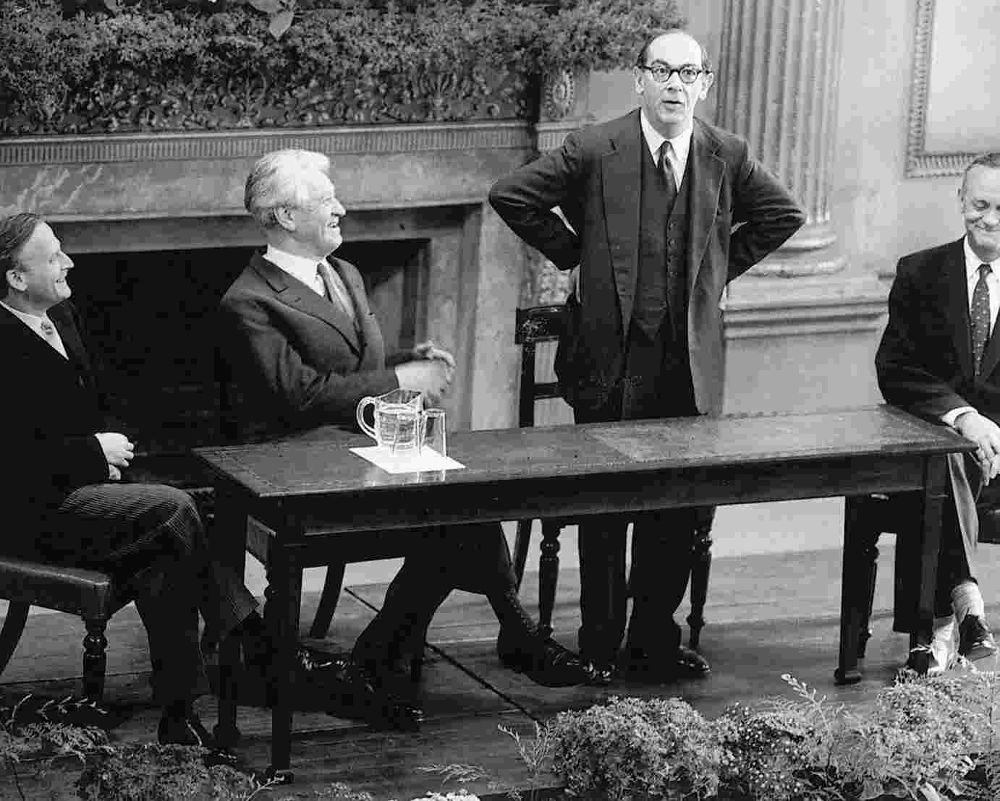
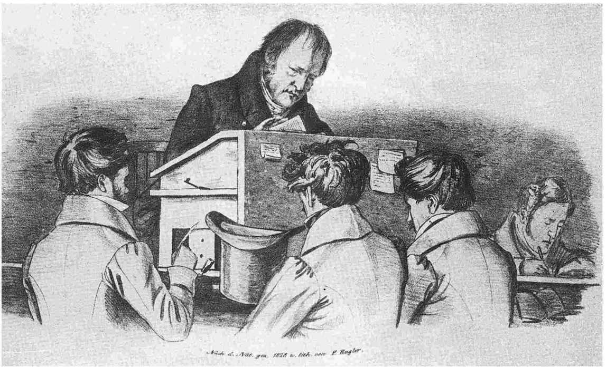
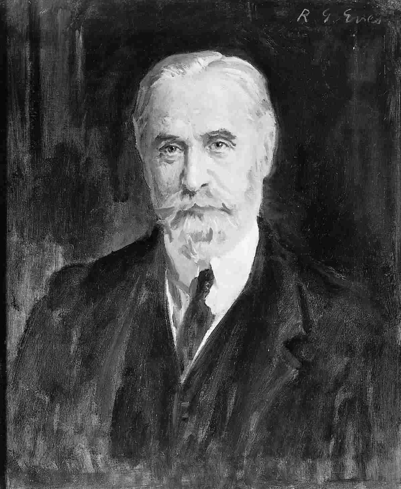
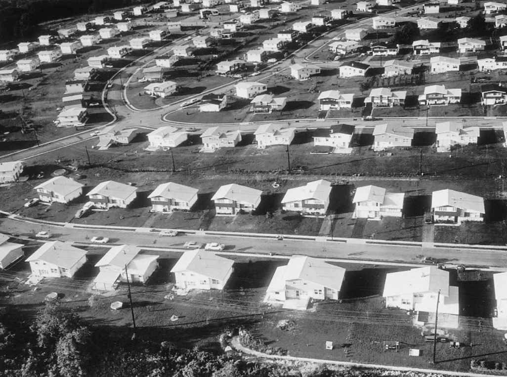

我们已经看到，黑格尔认为一切历史事件都导向自由这一目标。《历史哲学》的结尾暗示，这一目标或许已经达到了。但黑格尔几乎没有说明为什么普鲁士（或者当时其他任何德意志国家）应被视为3000年的世界历史一直在追求的那个辉煌结果。黑格尔讲授历史哲学课程时，冯·施泰因和冯·哈登贝格所领导的普鲁士自由改革时期已经结束。统治普鲁士的是国王和其他几个有权势的家族，它缺少一个重要的议会。国家在运转过程中，违反绝大多数公民的意见，强制执行严格的审查制度。黑格尔怎么会把这样一个社会当作人类自由的顶峰呢？难怪德国哲学家阿图尔·叔本华在谈到黑格尔时说：“政府把哲学当成服务于国家利益的手段，而学者则把它当作职业。”也难怪卡尔·波普尔会认为黑格尔有一个目的，那就是“向开放的社会宣战，从而服务于他的主子——普鲁士的弗雷德里克·威廉”。
在本章，我将试图解释黑格尔的自由概念。我认为，无论黑格尔是出于何种动机，他关于这一主题的思考都必须得到认真对待，因为它深入切中了我们在谈论一个社会是否自由时通常的假定。
我们已经看到，在《历史哲学》的导言中，黑格尔说世界历史不过是自由意识的进步罢了。没过几行他又说，“自由”“是一个不明确的词，极为含糊，……容易导致无数误解、混乱和错误”。不幸的是，他拒绝给出进一步的定义，而是说自由的根本性质要在解释世界历史的过程中“去展示”。这并不能令人完全满意。对《历史哲学》的考察也许已经使我们对黑格尔所理解的自由有了一个初步印象，但如果是这样，这个初步印象就迫切需要我们进一步阐明黑格尔在《法哲学原理》中更为明确的看法。
首先要谈谈标题。对英语读者来说，“法哲学”（Philosophy of Right）会让人觉得与对错（right and wrong）有关，或者说研究的是伦理学。在黑格尔的《法哲学原理》当中，伦理学的确占据着突出地位，但该书的主题更接近于政治哲学。黑格尔标题中被译成“法”的德文词是Recht，可以指“正当的”（right），但也有更广的关联，包括“法”在内，即整体意义上的“法”（the Law），而不是某一特殊的“法律”（law）。因此《法哲学原理》表达了黑格尔关于伦理学、法学、社会和国家的哲学思想。由于自由始终是黑格尔关注的核心，所以《法哲学原理》包含着黑格尔在社会和政治领域关于自由最详细的讨论。当然它也包含着对其他议题的讨论，但是为了继续理解自由这一重要概念，我将不去考虑那些议题。
我们不妨从熟悉的东西开始谈起。考虑一种观点，或可称为古典自由主义的自由观。自由主义者一般认为，自由就是不受约束。如果别人不干涉我并且不强迫我做不愿做的事，那我就是自由的。当我可以随心所欲地做事时，我是自由的。当我一个人时，我是自由的。在其著名论文《两种自由概念》中，以赛亚·伯林把这种自由概念称为“消极自由”。
黑格尔很熟悉这种自由概念，但伯林和其他许多当代自由主义者和自由意志主义支持者把它看成最可取的自由形式，黑格尔则把它称为形式的自由或抽象的自由，意指它有自由的形式，但没有自由的实质。他写道：“如果有人说自由就是可以为所欲为，那么我们只能认为，这种看法表明思想完全没有成熟，因为它对于绝对自由的意志，对于正确的道德生活等等没有丝毫的认识。”黑格尔对这种自由概念的反驳是，它把个人选择看成一种基础，认为自由必须从这里出发，至于这些选择如何做出以及为何做出，秉持这种自由观的人却不去追问。黑格尔则确实问了这个问题，他的回答是：那种脱离其他任何事物来考虑的个人选择乃是任性状况下的产物，所以并不是真正自由的。
这似乎有些专横。黑格尔如何敢说我们的选择是任性的，而他的选择却是真正自由的呢？这不是明目张胆要把他的价值观强加给我们吗？
也许是这样。但如果我们考虑当代的一个类似争论，也许就会更加赞同黑格尔所要表明的观点了。一些经济学家认为，要想知道一种经济制度运转得如何，恰当的检验是看它在多大程度上能使人满足自己的偏好。这些经济学家把个人偏好当作评价的出发点，而没有追问这些偏好是如何产生的。这些经济学家说，从众多偏好中进行选择，给某些偏好以更大的重要性（持有偏好的个人所赋予这些偏好的不同重要性除外），将是明目张胆地否认人们有能力判断什么是生活中真正需要的东西，从而把自己的价值观强加于他人。

图8 以赛亚·伯林（1909-1997）
我将把这些经济学家称为“自由派经济学家”。自由派经济学家有其批判者，我称之为“激进派经济学家”。激进派经济学家在同意把个人偏好当作评价经济制度运转如何的唯一基础之前，会追问个人偏好是如何形成的。他们举出了下面这样的例子：假定在某一时期，我们的社会把正常人体的气味看成理所当然的。对于出汗和可能闻到人身上的汗味这样的事情，人们几乎注意不到，即便注意到，也不会认为令人不快。这时有人发明了一种产品，它能有效地抑制出汗和气味散发。这项发明很有意思，但在我们描述的那个社会里，对此项产品有兴趣的人寥寥无几。然而，我们的发明者不愿轻易放弃。他精心策划了一场广告战，旨在让人们为自己是否比别人出汗更多、朋友们是否会对自己的体味产生厌恶而感到不安。他的广告很成功，人们发展出了使用这种新产品的偏好。而且由于产品价格处于可承受范围之内，很多人都买得起，人们也有能力满足这种偏好。从自由派经济学家的立场来看，所有这些都没有什么问题。在这种经济运转方式中，他们看不出有什么比其他方式不好的地方。而激进派经济学家却认为，这显然是荒谬的。为了避免这种荒谬性，他们认为经济学家必须去研究偏好的基础这一难题，在评价一种经济制度时，不应看它是否能够满足任何偏好，而应看它是否能够满足那些基于真正的人类需要或有助于真正的人类幸福的偏好。激进派经济学家承认，如果采用他们的方法，我们就不能声称自己的评价是价值中立的。但他们补充说，任何评价经济制度的方法都不可能是价值中立的。自由派经济学家所使用的评价方法仅仅是把满足现有偏好当作其唯一的价值标准。因此，虽然它假装很客观，这种方法的使用已经隐含着一种价值判断。自由派经济学家实际上是对影响人们偏好的任何偶然情形都给予认可。
这场争论显然很像黑格尔与那些把自由定义为可以为所欲为的人之间的争论。消极的自由概念就像自由派经济学家关于一个好的经济制度的构想：它拒绝追问我们随心所欲地做事时所感到的“愉快”是由什么影响所致。持这种自由观的人断言，追问这样一个问题并以对它的回答来区分出哪些选择是真正自由的、哪些自由选择仅仅是形式上的而非实质性的，这乃是把一个人自己的价值观写进了自由观之中。和激进派经济学家一样，黑格尔的反驳是：消极自由观已经以一种价值观为基础了，那就是基于选择行动的价值观，不论这种选择是如何形成的或者有多么任意。换句话说，消极自由观对影响人们选择方式的任何情形都给予认可。
人为创造出新的偏好，以便通过满足人们的这些偏好去牟利，如果你同意必须反对这样一种经济制度，那么你一定会认为激进派经济学家是有道理的。要把有助于真正人类幸福的偏好与那些无益的偏好区分开固然很困难，在这一点上甚至都无法达成一致，但不能因为这项工作困难就原封不动地接受所有偏好。
如果你认为激进派经济学家有道理，那么你距离认为黑格尔有道理就只有一小步之遥了。事实上，甚至连一小步都没有，因为黑格尔预见到了激进派经济学家立场的核心观点，加尔布雷斯、万斯·帕卡德等工业经济的批评者使这一观点在当代流行起来。下面这段话虽然是黑格尔在消费社会初兴时写的，但对其发展方向已经有了充分察觉：
这段话出现在《法哲学原理》考察黑格尔所谓“需求体系”的一节中，此前则提到了亚当·斯密、萨伊和大卫·李嘉图等古典自由经济理论的伟大人物。黑格尔对这一“需求体系”的批判表明，今天的激进派经济学家本质上已经接受了他反对自由经济社会观的理由，而这理由的背后则是黑格尔理智而可靠的历史透视。黑格尔从未忽视一个事实，即我们的需求和欲望是我们生活于其中的社会所塑造的，而这个社会又是历史进程中的一个阶段。因此，抽象的自由，那种随心所欲的自由，实际上受到了我们时代社会和历史力量的左右。
现在看来，作为对消极自由概念的批判，黑格尔的观点显得非常有道理。然而，他打算用什么东西来取代它呢？我们必然生活在特定历史时期的某个特定社会中，必然被我们生活的社会和时代所塑造。那么，除了被社会和历史力量引导着自由行动，自由还能是什么呢？
我们的某些欲望出自我们的本性，比如食欲是我们与生俱来的，或如性欲，我们生来就有发展它的潜能。许多其他欲望则一般是由我们的抚养、教育、社会和环境形成的。无论这些欲望的来源是生物的还是社会的，事实是在每一种情况下我们都无法选择它们。由于这些欲望不是自己选择的，所以我们从欲望出发来行事并不是自由的。
这一论点让人想起了康德而不是黑格尔，但黑格尔沿着这一思路走了下去。让我们作进一步探讨。如果我们从欲望出发来行事是不自由的，那么通往自由的唯一可能道路似乎就是清除掉人的所有欲望。但这样一来还剩下什么呢？康德的回答是理性。行为的动机可以来自欲望，也可以来自理性。除去了欲望，我们就剩下了纯粹的实践理性。
仅仅基于理性的行为——这种思想并不容易把握。我们往往会谈及一个人的行为是合理的或不合理的，但此时我们通常都是相对于这个人的最终目的或目标来谈的，这些目的都是建立在欲望基础上的。例如，当我们听说年轻而有天分的女演员海伦试图打入电影界时，我也许会说，她因吃了过多甜食而变得丰满是不合理的，但如果问我海伦想当电影明星是否合理时，我能说什么呢？我只能说这种欲望太基本了，以至于谈不上合理还是不合理：它只是关于这个女人的一个赤裸裸的事实。有没有关于合理或不合理的判断不是建立在这种基本欲望基础上的呢？
康德说可以有。当我们去除了所有特殊欲望甚至是最基本的欲望时，我们就剩下了合理性的纯形式要素，这个纯形式要素就是道德律自身的普遍形式。这便是康德著名的“绝对律令”，他是这样说的：“只按照你同时认为也能成为普遍律令的准则去行动。”
这里最令人费解的一步是从纯形式的合理性进到某种普遍性的观念。康德认为——黑格尔显然也赞同——理性无疑是普遍的。如果我们知道所有人都会死，并且苏格拉底是人，那么由推理的法则便可得知，苏格拉底会死。告诉我们这一点的推理法则是一个普遍法则。它不仅适用于希腊人或哲学家甚至是整个人类，而且适用于一切理性的存在者。在实践推理（即关于做什么的推理）过程中，这种普遍要素往往被一个事实所掩盖，即我们是从绝非普遍的特殊欲望出发的。让我们看看下面这则实践推理：“我想变得富有；我能从我的雇主那里骗来100万美元而不被发现；因此我应该欺骗雇主。”这则推理是从我想变得富有这一欲望出发的。这种欲望没有任何普遍性。（不要受许多人渴望变得富有这一事实的误导。作为我推理起点的欲望是：我，彼得·辛格，应当是富有的。而很少有人会和我共有这一欲望。）由于这则推理的出发点没有任何普遍性，所以它的结论也没有普遍性，它肯定不能适用于一切理性存在者。然而，如果我们不是从任何特殊欲望出发去推理应当做什么，就没有什么东西可以阻碍我们的推理适用于一切理性存在者了。独立于特殊欲望的纯粹实践推理只可能体现推理中的普遍要素。因此康德主张，它会表现为绝对律令所规定的形式。
如果康德是对的，那么唯一不是源于我们固有的或者受社会影响的欲望的行为就是依照绝对律令来行动。因此，只有依照绝对律令来行动才能是自由的。既然只有自由的行为才能具有真正的道德价值，绝对律令必然不仅是最高的理性律令，而且也是最高的道德律令。
还要补充最后一点。如果我的行为是自由的，促使我依照绝对律令来行动的动机就不能是我碰巧具有的任何特殊欲望。因此，它不能是我上天堂或赢得朋友尊敬的欲望，也不能是我为他人做好事的行善愿望。我的动机必须是：依照普遍的理性法则和道德律令来行动，并且只为它们而行动。我必须尽我的义务，因为它就是我的义务——康德伦理学有时被概括为一句口号：“为义务而义务。”事实上，由康德所说可以推出：当我们为义务本身而不是为其他东西而尽自己的义务时，我们才是自由的。
这样我们便得到结论：自由就在于履行一个人的义务。在现代读者看来，这个结论是悖谬的。“义务”一词已经同服从军队、家庭等社会组织的惯常准则联系在一起。谈及履行义务时，我们常常是指正在做很不愿意做，但因为不愿违抗惯常准则而感觉不得不做的事情。这种意义上的“义务”是与自由截然对立的。
倘若这便是“自由就在于履行我们的义务”这一结论所表现出的悖谬性的依据，那么我们应把它撇开。康德的结论是，自由就在于做我们真正认为是自己义务的事情，这里的“义务”是在最宽泛意义上使用的。用现代读者更容易接受的方式来表达康德的意思：自由就在于遵循一个人的良知。只要我们记得这里的“良知”并不是指我碰巧具有的、受社会影响的“内在声音”，这便准确把握了康德的意思。这里的“良知”乃是基于理性地接受作为最高道德律的绝对律令。这样一来，我们目前所得到的结论也许仍然令人难以置信，但已经显得不再悖谬了。毕竟，良知的自由被普遍视为我们所理解的自由的一个本质部分，即使它不是自由的全部。
现在回到黑格尔。我方才描述的康德立场在很大程度上也是黑格尔的立场。当我们依照某些固有的或者受社会影响的特殊欲望来行事时，我们并不自由；理性本质上是普遍的；自由需要到普遍的事物中去寻找——黑格尔从康德那里获得了所有这一切，并把它们转化成为自己的思想。此外，正如我们所看到的，黑格尔在《历史哲学》中把宗教改革看成自由新时代的黎明，因为它宣告了个人良知的权利。于是和康德一样，黑格尔也看到了自由与发展个人良知之间的关联。黑格尔也没有反对“自由就在于履行一个人的义务”这一观点。他说，义务显得像是对我们的自然欲望或任意欲望的一种限制，但事实上，“在义务中，个人从纯粹的自然冲动中……解放出来。……在义务中，个人获得了实质性的自由”。在直接评论康德时黑格尔说：“我在尽义务时，我心安理得而且是自由的。对义务的这种意义的强调乃是康德哲学及其崇高看法值得称赞的品质。”
于是在黑格尔看来，与随心所欲做事的消极自由观相比，为义务本身而履行义务是一个显著的进步。但黑格尔对康德的观点并不满意。他看到了其中的积极要素，但同时也是其最尖锐的批判者之一。《法哲学原理》题为“道德”的第二部分在很大程度上就是批判康德伦理学理论的。
黑格尔主要有两项反对意见。首先，康德的理论从未认真考虑过关于我们应该做什么的详情。这倒不是因为康德本人对这些实践问题缺乏兴趣，而是因为其整个理论都坚持道德必须基于纯粹的实践推理，而免于任何特殊的动机。结果，该理论只能给出空洞的、普遍形式的道德律，而不能说明我们具体的义务是什么。黑格尔指出，这种普遍形式不过是一种一致性原则或不矛盾律。如果我们没有出发点，它就无法把我们带到任何地方。举例来说，如果我们承认财产所有权的有效性，偷窃就是不一致的；但我们也可以否认财产能产生任何权利，从而成为完全一致的窃贼。倘若促使我们行动的只有“不要用自相矛盾的方式去行动！”这条指令，我们也许会发现自己根本没有做任何事情。
对康德绝对律令的这一反驳不仅康德的学生很熟悉，对当代道德哲学有兴趣的人也很熟悉。道德原则在形式上应当是普遍的，这一要求仍被广泛强调（例如《自由与理性》和《道德思考》的作者R.M.黑尔就是如此）。对它的反驳也依然常见，即认为这种要求是一种空洞的形式主义，什么也没有告诉我们。在为康德辩护时，有人提出应把康德解释为允许我们从特殊的欲望出发，但只有当我们能把这些欲望纳入一种普遍形式，承认它们对于类似情形中的任何人都是恰当的行动基础时，我们才能依此行动。黑格尔预见到了这种解释，他宣称，任何欲望都可以被纳入一种普遍形式，因此一旦允许引入特殊的欲望，对普遍形式的要求就无力阻止我们为合自己心意的任何不道德行为作辩护了。

图9 黑格尔在讲课
黑格尔对康德的第二项主要反驳是，康德的观点使人性发生分裂，使理性与欲望处于永恒的冲突之中，并且否认人的本性方面有任何权利得到满足。我们的自然欲望仅仅是某种需要压抑的东西，而康德又把压抑自然欲望这一即使能够完成也十分艰巨的任务交给了理性。正如我们所看到的，黑格尔在这一反驳中遵循着席勒在《美育书简》中提出的思路，但用自己的方式利用了席勒的批判。
我们可以用现代伦理学中另一个大家熟知的问题来表述这一点。在黑格尔看来，对康德伦理学的第二个主要反驳是，它没有为道德与个人利益之间的对立提出解决方案。康德留下了一个没有回答也永远不可能回答的问题：“为什么我应该是道德的？”我们被告知，我们应该为义务本身而履行义务，要求给出任何其他理由都将远离道德所要求的那种纯粹而自由的动机。但这根本不是回答，而只是拒绝提出这个问题而已。
席勒在《美育书简》中指出，曾几何时，这个问题还根本没有产生，道德还没有从惯常的美好生活理想中分离出来而成为某种单独的东西，康德式的义务观念也不存在。黑格尔则看到，一旦这个问题被提出来，就不可能回到那种惯常的道德观念了。黑格尔认为康德的义务观念无论如何都是一个进步，没有什么可遗憾的，因为它帮助现代人获得了一种希腊人在其狭窄的习惯性视野中永远不可能有的自由。黑格尔努力要做的就是把希腊生活的自然满足与康德道德观念的自由良知统一起来，从而回答这个问题。与此同时，他的回答还将为康德理论的另一个主要缺陷，即它完全缺乏内容，提供一种补救。
黑格尔认为，个体的满足与自由之间的统一是与一个有机共同体的社会特质相一致的。他所理解的共同体是什么样的呢？
到了19世纪末，黑格尔的有机共同体思想被英国哲学家布拉德雷所接受。布拉德雷虽然在原创性方面也许不能与黑格尔相媲美，但作为散文体作家肯定超过了他。因此，我将让布拉德雷代替黑格尔来阐述私人利益与公共价值之间和谐一致的根据。以下是布拉德雷所描述的在一个共同体中成长的孩子的发展过程：
布拉德雷和黑格尔的观点是，由于我们的需要和欲望是由社会塑造的，一个有机共同体会去培养那些对共同体最有益的欲望。此外，这个共同体还会灌输给其成员一种观念，即他们的身份就在于成为共同体的一部分，因此他们不会想到要脱离这个共同体而去追求自己的私利。就像我身体有机体的一部分（比如说我的左臂）不会想到要脱离我的肩膀，去寻找比把食物送到我嘴里更好的差事。我们也不应忘记，有机体与其组成部分之间的关系是相互的。我需要我的左臂，我的左臂也需要我。有机共同体不会忽视其成员的利益，一如我不会忽视我左臂受的伤。
如果可以接受这个有机共同体的模型，我们就会承认，它将结束个人利益与共同体利益之间的古老冲突。但它如何来维护自由呢？它所显示出的难道不是仅仅固执己见地遵从于习惯吗？它与希腊共同体的区别何在呢？——黑格尔认为，希腊共同体缺乏由宗教改革所提出并为康德的义务概念所把握（即使只是片面把握）的人类自由的基本原则。
黑格尔共同体中的公民之所以不同于希腊城邦的公民，恰恰是因为他们属于一个不同的历史时代，而且拥有罗马、基督教和宗教改革的成就作为其思想遗产的一部分。他们知道自己有追求自由的能力和依照良知做出决定的能力。那种惯常的道德之所以会要求遵守其规则，仅仅是因为遵守这些规则是出于习惯，它不能要求自由思想者去服从。（我们已经看到苏格拉底的质疑如何对雅典共同体的根基构成了致命威胁。）自由思想者只能效忠于他们认为符合理性原则的制度。因此与古代共同体不同，现代的有机共同体必须建立在理性原则的基础之上。

图10 布拉德雷（1846-1924）
我们在《历史哲学》中看到了当人民第一次冒着危险打倒不合理的制度，建立起一个以纯理性原则为基础的新国家时所发生的事情。法国大革命的领导者们是在一种纯粹抽象和普遍的意义上来理解理性的，它不会容忍共同体的自然倾向。法国大革命从政治上体现了康德纯粹抽象和普遍的义务观的错误，后者也不会容忍人类的自然方面。与这种纯粹的理性主义相一致，君主和所有其他贵族等级都被废黜。基督教被理性崇拜所取代，旧度量衡让位于更为理性的公制，甚至对历法也进行了改革。其结果便是恐怖统治，在那里空洞的普遍性与个体发生了冲突并且否定了个体，或者用不那么黑格尔的语言来说就是，国家视个体为自己的敌人并置其于死地。
虽然对于经历过法国大革命磨难的人来说，这场革命的失败是一场灾难，但从中可以吸取一个重要教训，那就是要想建立一个真正以理性为基础的国家，我们就绝不能把一切原有的东西都彻底摧毁而试图完全从零开始。我们必须在现实世界中寻找合理的东西，并允许这些合理要素得到充分表达。通过这种方式，我们就可以在一个共同体已有的理性和优点基础上进行建设。
这里有一个现代寓言，也许可以说明为什么黑格尔会把法国大革命看成一次光荣的失败，以及他希望我们从中学到什么。人们最初开始在城市生活时，没有人想到过城市规划问题。人们看哪里最方便，就在哪里建设房屋、商店和工厂，于是城市变得越来越杂乱无章。这时有人出来说：“这样不好！我们没有想过我们的城市应当变成什么样子。我们的生活正在被偶然性所支配！需要有人对我们的城市做出规划，使之符合我们关于美和美好生活的理想。”于是来了城市规划者，他们推平了旧居民区，建起有绿色草坪环绕的流线型高层公寓。道路修得宽阔笔直，购物中心建在开阔的停车场中央，工厂也被小心翼翼地与居住区隔离开来。然后城市规划者们扬扬自得地等待人们来致谢。但人们抱怨在高耸的公寓里看不到正在十层楼下面草坪上玩耍的孩子，抱怨当地的街角小店没有了，穿过那些绿地和停车场去购物中心要走很远。他们还抱怨说，由于现在每个人都不得不开车去上班，即使是那些新修的宽广笔直的马路也塞满了车辆。最糟糕的是，现在没有人步行了，街道变得不再安全，天黑以后穿过那些美丽的草坪变得很危险。于是，先前的城市规划者被解雇了，新一代规划者成长起来，他们从前辈的错误中吸取了教训。新一代的城市规划者所做的第一件事情就是停止拆除旧居民区，开始注意到未规划的旧城市的正面特征。他们称赞狭窄弯曲的街道上的种种景致，注意到让商店、住宅甚至是小工厂混在一起是多么便利。他们谈论这些街道如何鼓励人们步行，使来往车辆保持在最低限度，而且使城市中心既热闹又安全。这并不是说他们毫无保留地称赞未规划的旧城市，仍有一些事物需要整理。一些特别让人反感的工业部门要从人们居住的地方迁走，许多旧建筑必须修复，再不然就用一些与周围环境相协调的建筑来替换。无论如何，新的城市规划者发现旧城市是能够良好运转的；需要保持的正是这一点，无论还可以作哪些修补。
未规划的旧城市就像是以习惯为基础发展起来的古代共同体，第一批城市规划者则如同法国革命者们，热衷于把理性加诸现实。而第二代规划者乃是真正的黑格尔主义者，过去的教训使他们变得更加明智。他们愿意在那个源于实践适应而非有意规划的世界中发现合理性。

图11 一个有规划的共同体
现在我们可以明白，为什么现时代的自由公民会效忠于一个初看起来与那些基于习惯的古代世界共同体并无多大差别的共同体。这些自由公民了解其共同体所基于的理性原则，因而自由地选择了为它服务。
当然，现代理性共同体与古希腊共同体之间还是存在着一些差别，因为现时代认识到所有人都是自由的，奴隶制已经被废除。黑格尔认为，如果没有奴隶，雅典施行的那种耗时的民主制就无法运作。黑格尔也瞧不起那种带有普遍选举权的代议制民主，部分是因为他认为个人是不能被代表的（他说只有“社会的基本领域及其大范围利益”才适合被代表），部分是因为在有普遍选举权的情况下，个人投票的重要性微乎其微，这便导致对选举普遍漠不关心，于是权力也就落入了代表特殊利益的少数决策者之手。
黑格尔说，理性共同体是一种立宪君主制。之所以需要君主制，是因为在某个地方必定存在着最终决策权，在一个自由的共同体中，这种权力应当通过一个人的自由决策来表现。（对比希腊共同体，后者往往通过祈请神谕——共同体之外的一种力量——来寻求对困难问题的最终解决方案。）黑格尔说，另一方面，如果这种立宪政体是稳定的，君主通常除了签名什么也不用做。因此他的个人性格并不重要，其统治也就不是东方专制君主那种反复无常的统治。立宪君主制的其他要素是行政部门和立法机构。行政部门由公务员组成。取得公职的唯一客观条件是对能力的检验，但是当有资格的候选人不止一个并且他们的相对能力无法精确确定时，此时有主观因素进入，便需要君主做出决定。因此，君主保持着任命行政人员的权力。与黑格尔关于代表制的观念相一致，立法机构是拥有两院的议会，上院由地主阶层（landed class）组成，下院由商业阶层（business class）组成。然而，下院所代表的是像公司和行业协会这样的“大范围利益”，而不是个体公民本身。
对于生活在21世纪的读者而言，黑格尔的偏好肯定显得很古怪，在他们看来，后来的经验也往往证明他的论点是错误的，因此我只是匆匆讨论了黑格尔所说的理性共同体的一些细节。就黑格尔的自由观而言，他所偏爱的那些特殊的制度安排并非至关重要。现在我们应该清楚，黑格尔并不是在谈人民主权是自由社会的基本要素那种政治意义上的自由，他所感兴趣的乃是一种更加深刻、更具形而上学意义的自由。他所关注的是，当我们不受他人胁迫或我们自然欲望的驱使，也不受社会环境的左右而有能力进行选择时，我们就是自由的。正如我们所看到的，黑格尔认为，只有当我们理性地选择时，这样的自由才能存在；而只有当我们依照普遍原则进行选择时，我们的选择才是理性的。这些选择要想带给我们应有的满足，这些普遍原则就必须体现在一个按照理性方式组织起来的有机共同体中。在这样一个共同体中，个人利益与整体利益是和谐一致的。在选择尽我的义务时，我的选择因为是理性的，所以是自由的，我在服务于普遍性的客观形态——国家——的过程中也实现了自己。此外——这是对康德伦理学第二项重大缺陷的弥补——由于普遍法则体现于国家的具体制度，它不再抽象和空洞。它规定了我在共同体中的地位和角色所应尽的具体义务。
图12 一个未规划的共同体
我们有充分理由拒绝接受黑格尔对这样一个按理性组建的共同体的描述。但我们的反驳不会影响其自由观念的有效性。黑格尔试图描述的是个人利益与整体利益和谐一致的共同体。如果他没有成功，其他人可以继续这种探索。如果没有人成功，而且我们最终认为永远不会有人成功，那么我们将不得不承认，黑格尔意义上的自由不可能存在。但即使如此，黑格尔自称描述了唯一真正的自由也不会变得无效，这种自由仍然可以充当一种理想。
本章从一个谜开始讲起。如此强调自由以至于使之成为历史目的的黑格尔，怎么会认为当时那个独裁的德国社会已经实现了自由呢？他是不是一个卑躬屈膝的奴才，为讨得统治者的欢心而把这个词的意思作相反的曲解呢？更糟糕的是，他是不是他死后100年德国出现的那种极权主义国家的思想之父呢？
揭开这个谜的第一步是要弄清一个事实：黑格尔所描述的理想状态下的理性国家是否纯粹是对他那个时代普鲁士国家的描述？非也。两者有很大的相似性，但也有重要差异。我想提到四点。也许最重要的是，黑格尔理想中的立宪君主除了签名以外几乎不做什么事，而普鲁士的弗雷德里克·威廉三世却是一个专制得多的君主。第二点差异是，普鲁士根本没有能够运转的议会，而黑格尔的立法机构尽管较为无力，但确实为公众意见的表达提供了一个出路。第三，黑格尔是言论自由的支持者，即使是在非常明确的范围内。诚然，以今天的标准来看，黑格尔在这个问题上显得非常狭隘，因为他从这种自由中排除了一切相当于对政府及其官员的诽谤、诋毁或“轻蔑讽刺”的东西。但我们现在并不打算用今天的标准来评价他，而是将他的看法与当时普鲁士的情况作对比。由于《法哲学原理》出版于1819年卡尔斯巴德决议颁布严厉的书刊审查制度后仅18个月，黑格尔肯定是在争取比当时所能允许的更大的言论自由。第四，黑格尔拥护由陪审团进行的审判，从而在法律程序中把公民们包括进来。但在当时的普鲁士，陪审审判尚无合法性。
这些差异足以使黑格尔免于指控，说他撰写其哲学著作完全是为了取悦普鲁士君主。但它们并没有使黑格尔成为任何现代意义上的自由主义者。他对选举权的反对和对言论自由的限制都足以表明这一点。他厌恶一切含有民众代表意味的东西，甚至写了一篇文章来反对英国的选举法修正案。这一法案在1832年的最终通过终结了英国下议院在议员选举方面（当时仍把大多数成年男性——更不要说女性——排除在选举人名单之外）臭名昭著的不平等和弊端。
然而，我们理解了黑格尔的自由观念之后，这就不奇怪了。黑格尔会认为，人民选举权就相当于人们依照自己的物质利益或者对某位候选人多变甚至是古怪的好恶去投票。倘若黑格尔能够目睹现代民主政治下的一场选举，他就不必改变自己的想法。今天为民主制辩护的那些人，几乎不会不同意黑格尔关于大多数选举人如何通过投票来支持某位候选人的看法。他们与黑格尔的不同之处在于，他们认为无论大多数选举人可能有多么冲动或任性，选举依然是自由社会的一个关键要素；而黑格尔则会以冲动或任性的选择并非自由行为为由来断然否认这一点，并强调只有当我们的选择是基于理性时，我们才是自由的。在黑格尔看来，如果国家的整个方向都依赖于这些任性的选择，就等于将整个共同体的命运交给了偶然性。
这是否意味着黑格尔的确是极权主义国家的辩护者呢？卡尔·波普尔是这样看的。在那本读者甚众的《开放社会及其敌人》中，他援引了黑格尔的一些话来支持自己，这些说法必定会激怒任何持自由主义观点的现代读者。以下是一些例子：
在波普尔看来，这些引文足以表明黑格尔坚持“国家的绝对道德权威，它压倒了一切个人道德和一切良知”，由此使黑格尔成为现代极权主义发展中的一个重要角色。
黑格尔强调合乎理性是自由的基本要素，这也使上述解读变得更为可信。因为由谁来决定什么是理性的呢？只有理性选择才是自由的——如果以这一学说来武装自己，任何统治者都可以证明，只要反对其关于国家未来的理性计划，这样的人都应该镇压。因为如果他的计划是理性的，推动反对者提出反对的就必定不是理性，而是个人私欲或非理性的狂想。他们的选择并非基于理性，因此不可能是自由的。于是，查禁他们的报纸和传单并非限制言论自由，逮捕他们的领导者也不是干涉其行动自由，关闭他们的教会，制定新的、更加理性的崇拜形式亦不是干涉其宗教自由。只有想办法引导这些可怜的误入歧途者认识到领袖计划的合理性，他们才会真正自由！倘若这就是黑格尔的自由概念，还有哪位哲学家提出过比这更好的奥威尔式欺人之谈的例子吗？希特勒和斯大林都曾非常有效地利用这种欺人之谈实施其极权主义设计。
波普尔的论据并不像它看起来那样有说服力。首先，他的引文几乎全都不是出自黑格尔本人的著作，而是从他身后出版的学生们的课堂笔记中摘出来的，而且原书编辑还在序言中解释说自己作了一些改写。其次，这些响亮的措辞中至少有一句是错译。波普尔所引的“国家是神在世界中的行进”更准确的翻译应是“国家的存在是神与世界同在的方式”。这等于说，某种意义上国家的存在乃是神的规划的一部分。第三，对黑格尔来说，“国家”并非仅仅指“政府”，而是指整个社会生活。所以他并不是在赞美政府反对人民，而是指整个共同体。第四，这些引文需要有其他内容来平衡，因为黑格尔常以极端形式来论述某个主题的一个方面，然后再从另一方面去平衡。比如黑格尔关于国家的论述之前是这样一些话：“主观自由的权利是划分古代和近代的转折点和中心点”，然后又说，这种权利“以其无限性”已经成为新的文明形式的“普遍有效的原则”。之后他又说：“最重要的是，理性的规律必须被特殊自由的规律完全渗透……”此外黑格尔还强调：“鉴于自我意识的权利”，法律必须被普遍知晓才能有约束力。像传说中暴君狄奥尼修斯那样把法律挂得老高，或者把法律埋藏于博学的书籍中，以致没有普通公民能够读到它，这是不公正的。黑格尔对反动作家冯·哈勒尔的致命抨击也是类似的。冯·哈勒尔为一种非常适合希特勒的学说“强权即真理”作辩护。对此黑格尔写道：“对法律和在法律中确定的权利的仇恨是一种口号，它使人们明确无误、原原本本地认识到疯狂、软弱和伪善的本来面目，尽管它们可能伪装自己。”以如此强烈地捍卫法律准则为基础，是很难构建一个带有秘密警察和独裁力量的极权主义国家的。
不可否认，黑格尔用来描述国家的惊人之语，以及认为真正的自由要到理性选择中去寻找这一观点，都很容易遭到误用和曲解，以服务于极权主义。但同样不可否认，这是一种误用。我们已经看到，黑格尔关于立宪君主、言论自由、法律准则和陪审审判的许多观点都清楚地表明了这一点。问题在于，黑格尔对理性的认真态度我们今天几乎无人可比。如果有人告诉我们如何才能最合理地管理国家事态，我们会认为他在表达其个人偏好。我们认为，其他人会有不同的偏好。至于什么是最“合理的”，鉴于谁也说不清楚，我们还不如把它抛诸脑后，只满足于我们最喜欢的那些做法。于是当黑格尔写下“崇拜”国家或者在一个理性国家中实现自由时，我们倾向于把这些说法用于合自己心意的无论什么类型的国家——这一理解与黑格尔的意图完全相反。黑格尔所说的“理性国家”是指某种非常客观、非常具体的东西。它必须是个人真正选择服从和支持的国家，因为他们真正认同其原则，并且真正从作为其组成部分中得到了个人满足。在黑格尔看来，理性国家绝不会像纳粹和斯大林式的国家那样对待自己的公民。那种观念是一种自相矛盾。同样，一旦我们意识到，个体利益与集体利益在黑格尔的理性国家中是和谐一致的，国家利益与个人利益相冲突以及无情压倒个人权利的威胁就不存在了。
对于所有这些，现代读者可能会以“是的，但是……”做出回应。“是的”表明黑格尔本人并不拥护极权主义，“但是”则表明，在这一解释上，黑格尔对人与人之间有可能达成和谐异乎寻常地乐观；如果他相信这种和谐会存在于他所描述的那种国家，这种乐观与现实就更是惊人地相左。
我认为后一批评是无法回答的。要使黑格尔关于国家的说法可以得到辩护，他所设想的理性国家就必须非常不同于当时存在的（或此后一直存在的）任何国家。然而，他所描述的国家虽然可能非常不同，肯定不会完全不同于当时存在的那些国家。最有可能的解释是，黑格尔太过保守或谨慎，以至于并不提倡从根本上背离他在其中生活和教书的那种政治制度。说黑格尔的“一个目的是取悦普鲁士国王”，这显然是错误的；但也许可以公平地说，为了避免激怒普鲁士国王（以及所有其他德国统治者），黑格尔并未激进地抛出其背后的哲学理论。
然而，关于黑格尔对人与人之间和谐一致的看法还有一点需要说明：他的政治哲学仅仅是一个大得多的哲学体系的一部分，人与人的统一在那里有一种形而上学基础。我们在本章和上一章中给黑格尔在历史和政治方面的思想的篇幅已经偏多了（就它们在黑格尔全部哲学中的地位而言），现在是时候转向那个更大的哲学体系了。我们很快就会看到，转向黑格尔思想的另一面对于更深刻地理解他的历史哲学和政治哲学同样是有利的。